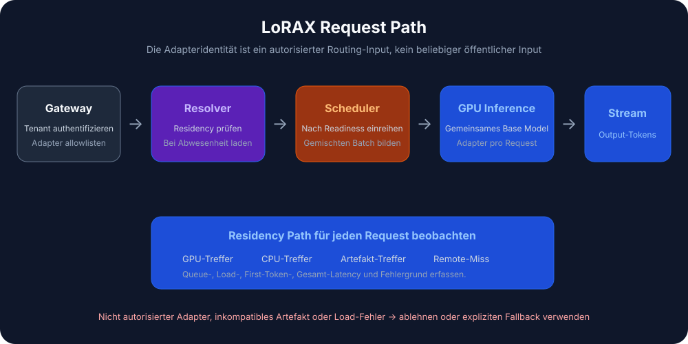
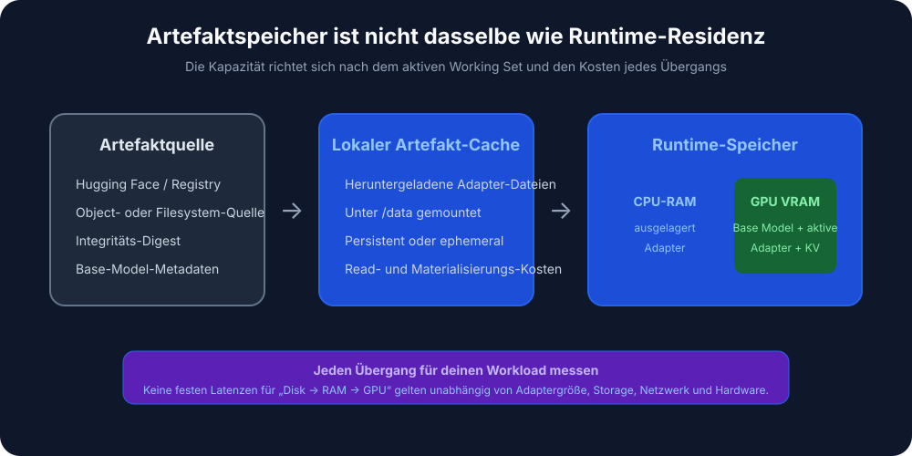

Automatische Übersetzung
Dieser Artikel wurde automatisch aus der englischen Originalversion übersetzt.
LoRAX-Bereitstellungsleitfaden: Tausende von LoRA-Adaptern auf Kubernetes
Früher bedeutete die Bereitstellung von Dutzenden fein abgestimmter großer Sprachmodelle einen eigenen GPU pro Modell. LoRAX (LoRA eXchange) hält ein einziges Basismodell im Speicher und wechselt bei jeder Anfrage leichtgewichtige LoRA-Adapter aus. Die Kosten pro Token bleiben im Allgemeinen konstant, auch wenn weitere Feinabstimmungen vorgenommen werden.
Dieser Leitfaden erklärt, was LoRA ist, wann LoRAX gegenüber vLLM vorzuziehen ist, wie es mithilfe des offiziellen Helm-Charts auf Kubernetes bereitgestellt werden kann sowie wie die REST-, Python- und OpenAI-kompatiblen APIs aufgerufen werden.
Zusammenfassung: LoRAX ist nützlich, wenn viele LoRA-Adapter denselben Basismodell teilen und eine effiziente Multi-Tenant-Bereitstellung erforderlich ist. Die schwierigen Aspekte liegen in der Adapter-Verwaltung, dem Speichermanagement, dem Batching, der Automatischen Skalierung sowie der Überwachbarkeit – nicht in der Mathematik hinter LoRA selbst.
Hintergrund: Was ist LoRA?
Durch Low-Rank Adaptation (LoRA) werden die vortrainierten Modellgewichte festgehalten, und in jede Transformer-Schicht werden kleine Matrizen zur Rangzerlegung eingefügt. Anstatt das gesamte Modell neu zu trainieren, werden nur kleine „Differenzen“ trainiert, die das neue Verhalten erfassen.
Eine vollständige Feinabstimmung eines 7B-Modells erzeugt eine Datei von über 20 GB. Ein LoRA-Adapter für dasselbe Modell wiegt hingegen etwa 100 MB. Genau dieser Unterschied macht eine dynamische Bereitstellung möglich: Man kann Tausende von Adaptern auf der Festplatte speichern und innerhalb von Millisekunden einen in den GPU-Speicher laden.
Das Problem, das LoRAX löst
Die traditionelle Mehr-Modell-Bereitstellung ist kostspielig. Jedes feinabgestimmte Modell benötigt eigenen GPU-Speicher, wodurch die Bereitstellung von 50 kundenspezifischen Modellen 50 separate Implementierungen erfordert – oder zumindest 50-mal so viel Speicher. Die Kosten steigen linear mit jeder neuen Variante.
LoRAX ist ein Apache 2.0-Projekt von Predibase. Es erweitert den Hugging Face Text-Generierung-Inferenzserver Durch dynamisches Laden von Adaptern, stufenweises Caching von Gewichten sowie kontinuierliches Batching mehrerer Adapter ermöglicht dies die Bereitstellung von Hunderten loTEN-spezifischer LoRA-Adaptern auf einer einzigen Ampere-Klasse GPU – ohne Einbußen bei Durchsatz oder Latenz.
Der Trick besteht darin, dass das Feintunen mit LoRA nur kleine Delta-Gewichte erzeugt statt vollständige Modellkopien. LoRAX behält lediglich das Basismodell im GPU-Speicher und injiziert die Adaptergewichte nach Bedarf. Nicht genutzte Adapter verbrauchen keinen VRAM.
Wie es funktioniert
Dynamisches Laden von Adaptern
Die Adaptergewichte werden genau zum Zeitpunkt jeder Anfrage injiziert. Das Basismodell bleibt im GPU-Speicher gespeichert, während die Adapter dynamisch geladen werden, ohne andere Anfragen zu blockieren. Sie können Tausende von Adaptern verwalten, doch die Speicherkosten entstehen nur für diejenigen, die aktuell Daten verarbeiten.
Stufenweises Caching von Gewichten
LoRAX ordnet die Adapter in drei Ebenen ein: GPU-VRAM für häufig genutzte Adapter, CPU-RAM für seltener genutzte und Festplatte für langfristiges Speichern. Diese Hierarchie verhindert Speicherausfälle und sorgt dafür, dass die Swap-Zeiten schnell genug sind, sodass die Benutzer nichts bemerken.
Kontinuierliches Batching mehrerer Adaptern
Hier ändert LoRAX das Batching-Verhalten. Es erweitert das kontinuierliche Batching, sodass es parallel mit verschiedenen Adaptern arbeiten kann – dadurch können Anfragen unterschiedlicher Feintunings denselben Vorwärtslauf teilen. Laut Predibase-Benchmarks dauert die Verarbeitung von 1 Mio. Token über 32 verschiedene Adapter etwa genauso lange wie die Verarbeitung derselben Menge an Token mit einem einzelnen Modell.
Die zugrunde liegende Technologie TGI
LoRAX baut auf Hugging Faces Text Generation Inference (TGI) auf, wodurch Sie von den Optimierungen von TGI profitieren: FlashAttention 2, paginierte Aufmerksamkeit, SGMV-Kerne für die Inferenz mit mehreren Adaptern sowie fließende Antwortgenerierung. Es handelt sich dabei um TGI ergänzt um eine dynamische Wechselmöglichkeit der Adapter.
Die Kosten pro Token bleiben im Großen und Ganzen konstant
Der Diagramm veranschaulicht dies deutlich. Bei dedizierten Implementierungen (dunkelgrau) steigen die Kosten linear an: Verdoppelt man die Modelle, verdoppeln sich auch die Kosten. LoRAX (oranger Farbe) hält die Kosten pro Token nahezu konstant, selbst wenn zusätzliche Adapter hinzugefügt werden. Selbst angepasste APIs von Anbietern wie OpenAI (hellgrau) können bei mehrmodellbasierten Workloads nicht mithalten.

Kosten pro Million Token bei der Verwendung immer feiner abgestimmter Modelle. LoRAX bleibt durch Multi-Adapter-Batching nahezu konstant; dedizierte Implementierungen skalen linear. Quelle: LoRAX GitHub._
Anfragenfluss

Wann LoRAX verwendet werden sollte
LoRAX ist in einigen spezifischen Situationen sinnvoll.
- Multi-tenant SaaS. Sie entwickeln eine Plattform, bei der jeder der 500 Kunden einen auf seinen Daten spezialisierten Chatbot erhält. Der herkömmliche Ansatz erfordert 500 separate Modellimplementierungen. LoRAX hingegen bedient alle 500 Nutzer über eine einzige GPU, indem er beim Eintreffen einer Kundenanfrage den entsprechenden Adapter lädt.
- Domain-spezifisches Routing durch Experten-Modelle. Sie betreiben spezialisierte LLMs für Recht, Medizin, Finanzen und Ingenieurwesen. Anstatt vier getrennte 13B-Implementierungen zu nutzen, führt LoRAX ein einziges Basis-LLaMA 2 13B-Modell aus und leitet die Anfragen je nach Anwendungsbereich an den richtigen Adapter weiter.
- Schnelles Experimentieren. Testen Sie 10 verschiedene Fine-Tuning-Ansätze in der Produktion? Implementieren Sie LoRAX einmal und wechseln Sie zwischen den Varianten, indem Sie einfach die entsprechenden Einstellungen ändern.
adapter_idParameter. Es sind weder Infrastrukturänderungen noch Neustarts der Dienste erforderlich. - Ressourcenbeschränkte oder Edge-Einsatzszenarien. Ein einzelner NVIDIA A10G kann ein quantisiertes 7B-Base-Modell zusammen mit Dutzenden von modellspezifischen Adaptern hosten, anstatt für jedes Modell eine eigene GPU zu benötigen.
Architektur: Speicherverwaltungshierarchie und Anfragenplanung
LoRAX basiert auf einer dreistufigen Speicherverwaltungshierarchie. Ihr Verständnis hilft dabei, die Leistung vorherzusagen und die erforderliche Kapazität zu planen.

LoRAX betrachtet jeden Adapter als eine leichte „Ansicht“ des gemeinsamen Basismodells. Der Scheduler konsolidiert die Anfragen, sodass das Servieren von 32 verschiedenen Adaptern genauso schnell erfolgen kann wie das Servieren eines einzigen – selbst bei einer Durchsatzrate von einer Million Tokens. Adapter wiegen in der Regel 10–200 MB, im Vergleich zu vollständigen Modellen mit mehreren Gigabytes Größe.
LoRAX auf Kubernetes bereitstellen
LoRAX wird zusammen mit Helm-Charts und Docker-Images geliefert, wodurch eine Bereitstellung auf Kubernetes unkompliziert ist.
Voraussetzungen
Sie benötigen:
- Eine Kubernetes-Cluster mit NVIDIA-GPUs (Ampere-Generation oder neuer: A10, A100, H100) NVIDIA Container Runtime auf GPU-Node konfiguriert
kubectlundhelmlokal installiert – Persistenter Speicher für Adapter-Caches; mounten Sie einen PersistentVolume dazu/datainnerhalb des Pods
Schnelle Einrichtung mit der offiziellen Helm-Chart
Helm Es handelt sich um den Paketmanager für Kubernetes. Er bündelt alle von einer Anwendung benötigten Kubernetes-Ressourcen (Deployments, Services, ConfigMaps usw.) in eine einzige „Chart“, sodass Sie das Ganze mit einem Befehl bereitstellen können, anstatt Dutzende von YAML-Dateien manuell verwalten zu müssen.
Predibase hat sein öffentliches Helm-Repositorium Ende 2024 eingestellt. Daher besteht der unterstützte Workflow darin, das LoRAX-Repositorium zu klonen und die Chart von der Festplatte zu installieren. Führen Sie diese Befehle von Ihrer Arbeitsstation aus:
# Clone the LoRAX repository and switch into it
git clone https://github.com/predibase/lorax.git
cd lorax
# Make sure kubectl can talk to your cluster
kubectl config current-context
kubectl get nodes
# Build chart dependencies (generates charts/lorax/charts/*.tgz)
helm dependency update charts/lorax
# Optional: render manifests locally to verify everything is templating
helm template mistral-7b-release charts/lorax > /tmp/lorax-rendered.yaml
# Deploy with default settings (Mistral-7B-Instruct)
helm upgrade --install mistral-7b-release charts/lorax
# Watch the pod come up
kubectl get pods -w
# Check logs to see model loading progress
kubectl logs -f deploy/mistral-7b-release-lorax
Der Diagramm zeigt die Erstellung einer Deployment-Einheit (standardmäßig eine Instanz) sowie eines ClusterIP-Services, der auf Port 80 lauscht. Beim ersten Start wird das Basismodell von Hugging Face heruntergeladen und in den GPU-Speicher geladen – dieser Vorgang kann je nach Netzwerkverbindung und GPU einige Minuten in Anspruch nehmen. Bei anschließenden Neustarts werden die im persistierenden Volume gespeicherten Gewichte wiederverwendet.
Tipp: Wenn helm upgrade --install gibt zurück Kubernetes cluster unreachable, Ihr kubeconfig-Kontext verweist auf einen Cluster, der offline ist. Starten Sie Ihren lokalen Cluster (Docker Desktop, kind, minikube) oder wechseln Sie zu einem erreichbaren Kontext. kubectl config use-context. Ausführung kubectl get nodes vor dem Bereitstellen wird überprüft, ob der API-Server verfügbar ist.
Grundmodell und Skalierung anpassen
Sie können ein anderes Grundmodell einsetzen oder die Ressourcen anpassen, indem Sie eine benutzerdefinierte Werte-Datei erstellen. Hier ist ein Beispiel llama2-values.yaml:
# Use LLaMA 2 7B Chat instead of Mistral
modelId: meta-llama/Llama-2-7b-chat-hf
# Enable 4-bit quantization to save VRAM
modelArgs:
quantization: "bitsandbytes"
# Scale to 2 replicas for high availability
replicaCount: 2
# Request exactly 1 GPU per pod
resources:
limits:
nvidia.com/gpu: 1
Mit Ihrer benutzerdefinierten Konfiguration bereitstellen:
helm upgrade --install -f llama2-values.yaml llama2-chat-release charts/lorax
führen Sie diese Befehle aus der geklonten lorax/ Repository, damit Helm den Chart-Verzeichnis finden kann.
LoRAX unterstützt die gängigen Open-Source-Modelle direkt aus der Box: LLaMA 2, CodeLlama, Mistral, Mixtral, Qwen und weitere. Überprüfen Sie die Listen der Modellkompatibilität für die neuesten Erweiterungen.
Bereitstellung des Services
Der Standard-Service-Typ ist ClusterIP, der nur Zugriff von innerhalb des Clusters erlaubt. Für externen Verkehr gilt Folgendes:
- Erstellen Sie einen LoadBalancer Service (bei Cloud-Anbietern)
- Konfigurieren Sie einen Ingress mit TLS-Abschluss
- Platzieren Sie eine API-Gateway vor dem Service zur Authentifizierung und Rate-Limiting
Aufräumen
Nach Abschluss der Tests sollten die GPU-Ressourcen freigegeben werden:
helm uninstall mistral-7b-release
Dies löscht die Deployment-Einheiten, den Service sowie alle Pods. Die im Cache gespeicherten Modellgewichte verbleiben im PersistentVolume, es sei denn, Sie löschen sie separat. /generate Der Endpoint nimmt JSON-Payloads mit Ihrer Anfrage sowie optionalen Parametern entgegen. Verwendung des Basismodells ohne jeglichen Adapter:
# Basic request to the base model (no adapter)
curl -X POST http://localhost:8080/generate \
-H "Content-Type: application/json" \
-d '{
"inputs": "Write a short poem about the sea.",
"parameters": {
"max_new_tokens": 64,
"temperature": 0.7
}
}'
Die Antwort enthält den generierten Text sowie Metadaten wie Tokenzählungen und Zeitangaben.
Laden eines bestimmten Adapters
einfügen adapter_id Parameter zur Angabe eines feinabgestimmten Modells. Hier ist ein Beispiel mit einem auf Mathematik spezialisierten Adapter:
curl -X POST http://localhost:8080/generate \
-H "Content-Type: application/json" \
-d '{
"inputs": "Natalia sold 48 clips in April, and then half as many in May. How many clips did she sell in total?",
"parameters": {
"max_new_tokens": 64,
"adapter_id": "vineetsharma/qlora-adapter-Mistral-7B-Instruct-v0.1-gsm8k"
}
}'
Beim ersten Aufruf mit einer neuen adapter_id, LoRAX lädt den Adapter vom Hugging Face Hub herunter und speichert ihn im Cache unter /data. Anschließende Anfragen verwenden die im Cache gespeicherte Version. Sie können auch Adapter über lokale Pfade laden, indem Sie folgendes einstellen "adapter_source": "local" neben einem Dateipfad.
Python-Klient
Für programmgesteuerten Zugriff: Installieren Sie den lorax-client Package:
pip install lorax-client
Der Client umhüllt die REST-API mit einer sauberen Schnittstelle:
from lorax import Client
# Connect to your LoRAX instance (default port 8080)
client = Client("http://localhost:8080")
prompt = "Explain the significance of the moon landing in 1969."
# 1. Generate using the base model (no adapter loaded)
base_response = client.generate(prompt, max_new_tokens=80)
print("Base model:", base_response.generated_text)
# 2. Generate using a fine-tuned adapter
# The adapter_id can be a Hugging Face repo ID or a local path
adapter_response = client.generate(
prompt,
max_new_tokens=80,
adapter_id="alignment-handbook/zephyr-7b-dpo-lora",
)
print("With adapter:", adapter_response.generated_text)
Der Client unterstützt Streaming, Dekodierungsparameter (Temperature, Top-P, Wiederholungsstrafe) sowie Details auf Token-Ebene. Siehe dazu den Kundenreferenz für fortgeschrittene Nutzung.
OpenAI-kompatibler Endpunkt
LoRAX implementiert die OpenAI Chat Completions API unter dem /v1 path. Dadurch kann LoRAX in Tools eingebunden werden, die das API-Format von OpenAI erfordern: LangChain, Semantic Kernel oder benutzerdefinierte Anwendungen. model Feld zur Angabe des zu ladenden Adapters:
import openai
# Point the OpenAI client at LoRAX
openai.api_key = "EMPTY" # LoRAX doesn't require an API key by default
openai.api_base = "http://localhost:8080/v1"
# The model parameter becomes the adapter_id
# This allows seamless integration with tools like LangChain
response = openai.ChatCompletion.create(
model="alignment-handbook/zephyr-7b-dpo-lora",
messages=[
{"role": "system", "content": "You are a friendly chatbot who speaks like a pirate."},
{"role": "user", "content": "How many parrots can a person own?"},
],
max_tokens=100,
)
print(response["choices"][0]["message"]["content"])
Es ergeben sich daraus zwei praktische Anwendungsfälle:
- Einfache Ersetzung. Bestehende Anwendungen können durch Änderung einer einzigen Konfigurationszeile von den auf OpenAI gehosteten Modellen auf Ihre eigene Infrastruktur migriert werden.
- Integration in Tools. LoRAX kann ohne zusätzlichen Anpassungskodengenutzt werden, um mit jedem Framework zusammenzuarbeiten, das bereits die OpenAI-API unterstützt.
Die erste Anfrage an einen neuen Adapter weist aufgrund des Downloads und Ladens von LoRAX eine höhere Latenz auf. In benutzerorientierten Anwendungen sollte daher vorgesorgt werden, indem beliebte Adapter im Voraus geladen werden oder ein Ladezustand angezeigt wird.
Kompromisse
Was LoRAX besonders gut kann
- Viele Modelle auf einer GPU. Hunderte oder Tausende fein abgestimmter Modelle auf einer einzigen GPU anstelle einer separaten Bereitstellung pro Modell. Die Kosten bleiben nahezu konstant, wenn Sie weitere Adapter hinzufügen.
- Keine ungenutzte Speicherressource. Adapter werden nach Bedarf geladen. Unbenutzte Modelle verbrauchen keine VRAM. Sie können ein Katalog mit mehr als 1.000 spezialisierten Modellen führen und nur für die wenigen Modelle bezahlen, die aktuell Daten verarbeiten.
- Konstante Durchsatzleistung. Kontinuierliches Batching mehrerer Adapter hält Latenzzeit und Durchsatz nahe bei denen einer einzelnen Modellbereitstellung. Predibase-Benchmarks zeigen, dass die parallele Verarbeitung von 32 Adaptern nur geringe Zusatzbelastungen im Vergleich zur Verarbeitung eines einzigen Adapters verursacht.
- Unterstützung durch TGI. Basierend auf Hugging Face TGI stehen Ihnen FlashAttention 2, paginierte Aufmerksamkeitsmechanismen, Streaming-Technologien sowie SGMV-Kerne für die Inferenz mit mehreren Adaptern zur Verfügung.
- Vollständige Betriebsfähigkeit. Docker-Images, Helm-Charts, Prometheus-Metriken sowie OpenTelemetry-Tracking. Unter Lizenz Apache 2.0 – somit ohne kommerzielle Einschränkungen.
- Breite Modellunterstützung. Funktioniert mit LLaMA 2, CodeLlama, Mistral, Mixtral, Qwen und weiteren Modellen. Unterstützt Quantisierung (4-Bit über bitsandbytes, GPTQ, AWQ), um den Speicherverbrauch zu reduzieren.
Einschränkungen
- Nur LoRA. Alle Adapter müssen aus einer LoRA-basierten Feinabstimmung desselben Basismodells stammen. Vollständige Feinabstimmungen, die eigenständige Modelle erzeugen, funktionieren ohne Konvertierung nicht. Verschiedene Basistypen erfordern separate LoRAX-Implementierungen.
- Kaltstart. Der erste Anruf nach dem Start lädt das Basismodell in den GPU-Speicher (30–90 Sekunden für größere Modelle). Der erste Anruf bei einem neuen Adapter weist eine Download-Latenz von Hugging Face auf. Planen Sie hierfür Gesundheitsprüfungen sowie Vorausladevorgänge ein.
- Cache-Probleme unter plötzlichem Lastanstieg. Wenn der Datenverkehr plötzlich Dutzende verschiedener Adapter betrifft, muss LoRAX die Gewichte zwischen GPU, CPU-RAM und Festplatte verschieben. Der Austausch von Adaptern aus dem RAM dauert etwa 10 ms, doch ein sehr großer Arbeitsbereich kann vorübergehende Verlangsamungen verursachen. Überwachen Sie den GPU-Speicher sowie die Cache-Erfolgsraten der Adapter.
- Schnell entwickeltes Projekt. LoRAX wurde Ende 2023 von TGI abgeleitet und entwickelt sich rasant weiter. Rechnen Sie mit häufigen Updates sowie gelegentlichen Bruchänderungen, da es den Entwicklungen bei TGI folgt. Fixieren Sie in der Produktion konkrete Versionen.
LoRAX vs. vLLM
vLLM Es handelt sich um einen weiteren Hochdurchsatz-Servermotor, der kürzlich die Unterstützung für mehrere LoRA-Modelle hinzugefügt hat. Beide Lösungen adressieren unterschiedliche Probleme.
| Funktion | LoRAX | vLLM |
|---|---|---|
| Hauptfokus | Massive Skalierbarkeit: Hunderte oder Tausende von Adaptern | Hohe Durchsatzrate: maximale Anzahl an Tokens pro Sekunde bei weniger aktiven Adaptern |
| Architektur | Dynamischer Speichertausch; aggressives Abladen auf CPU/Speicher | Batching, optimiert für die parallele Ausführung aktiver Adapter |
| Am besten geeignet für | Long-tail SaaS: Tausende von Nutzern mit sporadischem Nutzungsmuster | Hohe Verkehrsstufen: 5–10 stark genutzte Adapter |
| Base | Hugging Face TGI | Kundenspezifischer PagedAttention-Engine |
Wählen Sie LoRAX, wenn Sie über eine große Anzahl an Adaptern verfügen (einer pro Benutzer, wobei die meisten den größten Teil der Zeit inaktiv sind) und hier eine stufenweise Caching-Strategie Vorteile bringt. Wählen Sie hingegen vLLM, wenn es sich um eine kleine Anzahl an sehr aktiven Adaptern handelt und die reine Durchsatzleistung oberste Priorität hat.
Einführung
Ein praktischer Fahrplan vom Prototyp bis zur Produktion:
1. Beginnen Sie mit kleinen Schritten
Führen Sie die Bereitstellung von LoRAX mit dem bereits verwendeten Basismodell sowie 3–5 repräsentativen Adaptern durch. Überprüfen Sie, ob das Laden der Adapter korrekt funktioniert, und messen Sie die Basislatenz für Ihre Arbeitslast.
2. Messung und Profilierung
- Erfassen Sie die Cache-Erfolgsraten der Treiber sowie den GPU-Speicherverbrauch unter realistischem Traffic.
- Identifizieren Sie die am stärksten genutzten Adapter (die Top 20 % nach Anfragenmenge) und überlegen Sie, diese beim Start vorzuladen.
- Messen Sie die Latenzwerte P50, P95 und P99 sowohl für geladene als auch für ungeladene Adapter.
3. Optimierung für Ihre Arbeitslast
- Wenn einige Adapter besonders stark genutzt werden, erhöhen Sie die GPU-Gedächtniszuweisung, um mehr davon aktiv zu halten.
- Falls die Nutzung über Hunderte von Adaptern hinweg ungleichmäßig verteilt ist, passen Sie den schichtweisen Cache an, um einen ausgewogenen Einsatz von RAM und Festplatte zu gewährleisten.
- Verwenden Sie Quantisierung (4-Bit Bitsandbytes oder GPTQ), wenn das VRAM begrenzt ist.
4. Horizontale Skalierung
Sobald das Verhalten bei einer einzigen Instanz verstanden wurde, fügen Sie Replicas hinzu, um eine hohe Verfügbarkeit zu erreichen. Platzieren Sie dazu einen Load Balancer davor, der die Anfragen weiterleitet. adapter_id Daher erreichen Anfragen für denselben Adapter dieselbe Replik. Dadurch wird die Cache-Localität verbessert.
5. Überwachung
Richten Sie Dashboards für die GPU-Nutzung, Cache-Metriken der Adapter sowie Anfrage-Latenzen nach Adaptern ein. Achten Sie auf Cache-Thrashing während von Traffic-Spitzen und passen Sie die Skalierung entsprechend an.
Mit LoRAX wird das Ausführen von N Feinabstimmungen zu einem Routing-Problem auf einer einzigen GPU statt zu einem Bereitstellungsproblem auf N GPUs.
Wichtige Erkenntnisse
- Der Dienstbetrieb von LoRA-Adaptern ist ein Problem im Bereich Routing und Speichermanagement.
- Ein Basismodell zusammen mit vielen Adaptern kann günstiger sein als ein vollständig feinabgestimmtes Modell pro Nutzer.
- Batching funktioniert nur, wenn die Serviceschicht die Platzierung der Adapter sowie die Austauschkosten kennt.
- Kubernetes bietet operationelle Vorteile – allerdings nur, wenn die Metriken Latenz, Cache-Hits und Fehler auf Adapterebene offenlegen.
Referenzen
- Predibase LoRAX auf GitHub - Laufzeitumgebung für den Betrieb mehrerer LoRA-Modelle. LoRA-Paper - Anpassung mit niedriger Rangordnung. Documentation zu Hugging Face PEFT - parametereffizientes Feintunen. Kubernetes-Dokumentation - Container-Orchestrierung.